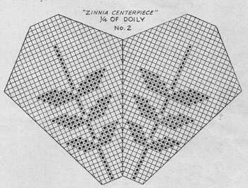

Zinnia Centerpiece Doily
A zinnia crochet doily is an exquisite piece of handmade artistry that beautifully combines the delicate intricacy of crochet with the vibrant charm of zinnia flowers. Crafted using fine crochet hooks and soft, high-quality yarn, this doily showcases the meticulous attention to detail and skillful craftsmanship of its creator.
MATERIALS:
DAISY Mercerized Crochet Cotton, Art. 65:-2 skeins each Lt. Green and Shd. Yellows, size 30;
or
DAISY Mercerized Crochet Cotton, Art. 97:-2 balls each Lt. Green and Shd. Yellows, size 30;
or Lily
MERCROCHET Cotton, Art. 161:-2 balls each Bright Nile Green and Shd. Yellows, size 30.
Steel crochet hook No. 13.
SIZE:-18 to 20 inches.
CENTER:Starting in center with Lt. Green, ch 9, join with sl st to form ring.
1st Rnd: Ch 1, 16 sc in ring, join with sl st in 1st sc.
2nd Rnd: (Ch 29, sc in next sc, ch 31, sc in next sc) repeated around (16 lps). Fasten off on back of ring.
3d Rnd: Join to one ch-29 lp, (ch 7, sc in next lp) 16 times.
4th Rnd: Ch 3, dc in same st, * dc in next sp, ch 2, dc in center of same sp, ch 2, (dc, ch 3, dc) in next sc, ch 2, dc in center of next sp, ch 2, dc in left end of same sp, 2 dc in next sc. Repeat from * around, ending with 1 dc, join with sl st in top of ch-3.
5th Rnd: Ch 3, turn, dc in next dc, * (ch 2, dc in next dc) twice, ch 2, dc in next ch-3 (corner) sp, (ch 2, dc in next dc) twice, ch 2, dc in next 4 dc. Repeat from * around, ending with 2 dc, join to 1st ch-3.
6th Rnd: Ch 3, turn, dc in next 2 dc, * (ch 2, dc in next dc) twice, ch 2, (dc, ch 2, dc) in next (corner) dc, (ch 2, dc in next dc) twice, ch 2, dc in next 4 dc. Repeat from * around, ending with 1 dc, join to 1st ch-3.
7th Rnd: Ch 3, turn, dc in next dc, * (ch 2, dc in next dc) 3 times, ch 1, dc in next ch-2 (corner) sp, ch 1, dc in next dc, (ch 2, dc in next dc) twice, ch 2, dc in next 4 dc. Repeat from * around, ending with 2 dc, join to 1st ch-3.
8th Rnd: Ch 3, turn, dc in next 2 dc, * (ch 2, dc in next dc) 8 times (8 sps made), dc in next 3 dc. Repeat from * around, join to 1st ch-3.
9th Rnd: Ch 3, turn, dc in next dc, * make 4 sps to corner dc, ch 3, dc in same corner dc, make 4 sps and 1 blk. Repeat from * around, join.
10th Rnd: Ch 3, turn, dc in next 2 dc, * make 4 sps, ch 2, dc in corner ch-3, ch 2, dc in next dc, 4 sps, 1 blk. Repeat from * around, join.
11th Rnd: Ch 3, turn, dc in next dc, * make 5 sps to corner dc, ch 3, dc in same corner dc, 5 sps, 1 blk. Repeat from * around, join.
12th Rnd: Ch 3, turn, dc in next 2 dc, (2 dc in next sp, dc in next dc) 3 times (3 blks made), * 2 sps, ch 2, dc in next ch-3 corner sp, ch 2, dc in next dc, 2 sps, 7 blks. Repeat from * around, join.
13th Rnd: Turn, sl st in next dc, ch 3, * 4 blks, 2 sps to corner dc, ch 2, dc in same corner dc, 2 sps, 4 blks, 1 sp. Repeat from * around, join final ch-2 to top of 1st ch-3.
14th Rnd: Ch 3, turn, 2 dc in next sp, dc in next dc, * 1 sp, 4 blks, 1 sp, ch 1, dc in corner ch-2 sp, ch 1, dc in next dc, 1 sp, 4 blks, 1 sp, 1 blk. Repeat from * around, join.
15th Rnd: Ch 5, turn, dc in next dc, 1 sp, * 4 blks, 2 sps around corner, 4 blks, 2 sps, 1 blk, 2 sps. Repeat from * around, ending with 3 dc, join to 3d st of 1st ch-5.
Continue, following Chart, thru 31st rnd, making corners in order as in 9th thru 15 rnds, and turning each row. Turn.
32nd Rnd: Ch 4, sk corner dc, dc in next dc, 13 sps, 1 blk, 13 sps, tr in next (corner) dc.
33rd Rnd: Ch 4, turn, sk tr and 1st dc, dc in next dc, 12 sps, 1 blk, 12 sps, tr in next dc. Continue, following Chart, thru Row 42. Fasten off. Join to corner dc of next side of Center and repeat Rows 32 thru 42. Repeat on other 6 sides.
FRILL: Join Green in angle between any 2 points, * (4 sc in next sp) 11 times, (3 sc in next sp) 7 times, (4 sc in next sp) 11 times. Repeat from * 7 times, join to 1st sc.
2n Rnd: Ch 8, sk 1 sc, dc in next sc, (ch 5, sk 1 sc, dc in next sc) 19 times up to corner, * (ch 5, dc in next sc) 4 times, (ch 5, sk 1 sc, dc in next sc) 10 times, (ch 5, dc in next sc) 4 times, (ch 5, sk 1 sc, dc in next sc) 20 times, ch 5, dc in 1st sc on next side, (ch 5, sk 1 sc, dc in next sc) 20 times. Repeat from * around, join to 3d st of 1st ch-8.
3rd Rnd: Sl st to center of next lp, ch 9, dc in next lp, (ch 6, dc in next lp) repeated around, join to 3d st of 1st lp.
4th Rnd: Sl st to center of next lp, ch 10, dc in next lp, (ch 7, dc in next lp) repeated around, join. Fasten off.
5th Rnd: Repeat with Shd. Yellow, starting with ch-11 and making ch-8 lps around. Join and fasten off.
6th Rnd: Repeat with Green, starting with ch-12 and making ch-9 lps around. Join.
7th Rnd: Start with ch-13 and make ch-10 lps around. Join.
8th Rnd: Start with ch-14 and make ch-11 lps around. Join and fasten off.
9th Rnd: Join Shd. Yellow, start with ch-15 and make ch-12 lps around. Join and fasten off.
ZINNIA: With Shd. Yellow, ch 7, join with sl st to form ring.
1st Rnd: Ch 1, 12 sc in ring, join with sl st in back lp of 1st sc.
2nd Rnd: (Ch 3 and working in back lps, 3 dc in next sc, ch 3, sc in next sc) 6 times.
3rd Rnd: (Ch 3, sc in back lp of sc between next 2 petals) 6 times.
4th Rnd: Sc in next lp, * ch 3, (3 dc, ch 3, sc) in same lp, ch 3, 3 dc in both lps of next sc between lps, ch 3, sc in next lp. Repeat from * around (12 petals).
5th Rnd: Repeat Rnd 3 (12 lps).
6th Rnd: (Ch 4, in next lp make 4 tr, ch 4, sc) 12 times.
7th Rnd: (Ch 4, sc in back lp of sc between next 2 petals) 12 times.
8th Rnd: * Ch 4, in next lp make 4 tr, ch 4, sc, ch 4, tr; 2 tr in next sc, in next lp make tr, ch 4, sc, ch 4, 4 tr; ch 4, sc in next sc. Repeat from * around (18 petals).
9th Rnd: Repeat Rnd 7 (18 lps).
10th Rnd: (Ch 4, in next lp make 5 tr, ch 4, sc) 18 times. Fasten off.
Make 8 Zinnias.
Sew a Zinnia on each stem 3 rows below start of Frill.
Starch Doily, stretch and pin center right-side-up in true shape. As starch stiffens, pin ruffle into even ripples, rolling it down towards center of doily between Zinnias. Let stand until dry.

HOME